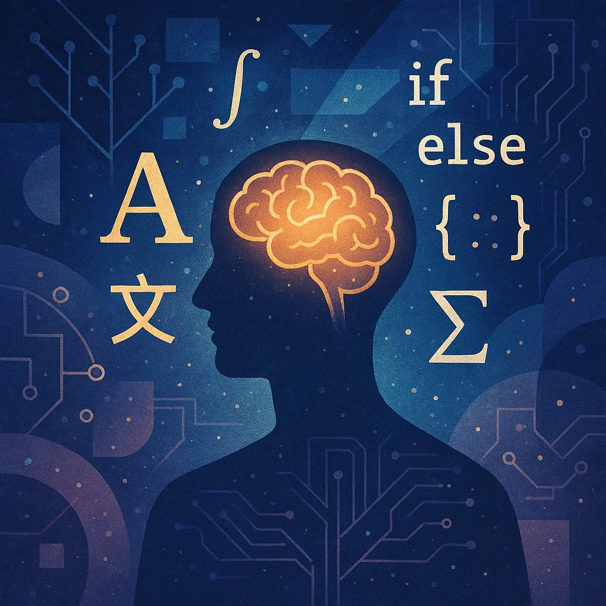

语言视角下的外语、编程语言与数学学习
Droggeljug!
引言
当我们谈论“语言”时，往往首先想到人类彼此交流的自然语言。
然而，如果我们将视野拓宽，计算机编程语言和数学符号体系也可以被视作广义的“语言”。
它们都承担着沟通和表达的功能：自然语言用于人与人的交流，编程语言用于人与计算机的对话，数学语言用于描述抽象概念与客观规律。
本文将从语言这一核心视角出发，全面比较外语学习、编程语言学习和数学学习，探讨它们在表达方式、思维模式、学习路径、应用场景以及对世界的建构等方面的异同，并反思不同“语言”技能之间的迁移与互促作用。
扩展的语言定义：多种符号体系的一体化视角
通常，“语言”被定义为一种由符号和规则组成的用于表达和交流意义的系统。从这个定义出发，我们可以将自然语言、编程语言和数学语言视为同一范畴下的不同体现：
自然语言
人类演化出的符号系统（包括语音、文字等），具有丰富的词汇和复杂的语法，用于表达思想、情感和描述世界。
自然语言具有开放性和演变性，各种语言之间存在差异但也有人类普遍语法的共性。
编程语言
人工设计的符号系统，用于人与计算机之间的信息交流。它有严格定义的语法和语义，包含关键字、数据类型、控制结构等元素。
实质上，程序代码可以看作一种特殊的“外语”，程序员需要学习这门语言的“词汇”和“语法”，并将其组合起来以交流和表达特定含义。
因此，编程语言虽然和自然语言不同，但在本质上同属“语言”的范畴。
数学语言
由数字、符号、公式、逻辑符号构成的人类抽象符号系统。
数学常被称为“科学的语言”或“宇宙的语言”。
正如伽利略的名言所说：“自然界这本书是用数学语言写的！”
数学语言通过公理、定义和推理规则来构建体系，用精确的符号表达数量关系和逻辑关系。
它跨越了自然语言的藩篱，让科学家能以公式交流思想。
小结
尽管这三种“语言”服务于截然不同的领域，但都符合语言的广义定义：它们各自拥有符号系统和规则体系，用于信息的编码与传达。
正因为如此，我们可以用统一的框架来比较它们的特点。
表达方式与语法：符号系统、规则与歧义
不同“语言”在表达方式和语法规则上存在显著区别。
自然语言的表达与歧义
自然语言使用单词和句法规则来表达意义，但往往存在冗余和歧义。
同一句话可能有多种解读，需要依赖上下文和语境来确定含义。
例如英语中的句子 “Kevin saw John with the telescope in the park.” 就有歧义：
究竟是谁在公园用望远镜看谁？
可能的理解有多种：凯文在公园里用望远镜看约翰，或凯文看到了带着望远镜在公园里的约翰，等等。
这种歧义在自然语言中司空见惯，人类通过语境和常识去消解 ambiguities。
但这种模糊性也赋予了自然语言灵活性和创造力，使诗歌、幽默等成为可能。
语法上，自然语言的规则往往复杂且有诸多例外，允许一定程度的语序变化和冗余表达，一个单词拼写或语法的小错并不妨碍交流。
编程语言的严格语法
编程语言的设计初衷就是零歧义。
程序代码必须精确遵循语法规则，否则计算机无法理解。
一句代码只要少一个分号或括号不匹配，程序就会报错而无法执行。
编程语言通常基于形式文法（很多接近上下文无关文法）设计，尽量避免让使用者写出有歧义的语句。
例如，在大多数编程语言中，=和==有截然不同的含义，任何细微的符号差别都会导致完全不同的结果。
这种严谨性确保了程序的可预测性——代码的含义对人和计算机都是明确的。
但也因此，编程语言在表达上的灵活度远不及自然语言，一句有效的程序必须形式上完美正确。
从表达方式看，编程语言通常使用英语单词作为关键字（如if, else, function等），并辅以特殊符号（如{}, ;, ==等）构成“句子”。
它没有语音层面的表现，主要通过文本（源代码）来交流。
任何创造性的表达都必须在语法允许的框架内进行。
可以说，编程语言就像一位不懂变通的“听众”，只接受完全合乎语法的表达。
数学语言的符号与约定
数学也有自己的“表达法”和“语法”——即符号表示法和逻辑规则。
理想情况下，数学表达应当精确无歧义，例如方程、公式在严格定义下只有唯一解释。
然而在实际使用中，数学符号体系也累积了一些约定俗成的“奇特语法”，对初学者来说可能造成困扰。
例如记号上的不一致：表示 ，那么按照直观类推， 似乎应该表示 ，但实际上约定 表示 。
形式相似的符号却代表完全不同的含义，这种不一致性完全靠约定记忆，让不少学生感觉“学数学时大部分精力都在折腾符号而非理解概念”。
因此有人戏称数学符号是一门“糟糕的编程语言”，设计上缺乏统一性和可组合性。
不过，在严谨的数学推导中，我们会尽可能定义清楚每个符号以消除歧义。
数学语言的语法主要体现在逻辑结构上，例如公理化系统中命题的推演规则，证明中引用定理的合法性等。
与自然语言不同，数学语言高度依赖书面符号而非口语（尽管我们也用自然语言来阐释数学概念）。
数学表达强调简洁优美，用寥寥符号传递复杂思想（例如一个方程蕴含丰富信息）。
总的来说，数学语言在符号层面趋向精确，但由于历史沿袭的符号惯例，初学时需要克服不少记号解析的困难。
小结
在表达与语法方面，自然语言灵活多变但充满歧义，编程语言刻板严格力避歧义，数学语言介于二者之间——追求形式精确却也有符号约定的模糊之处。
从容错性看，人类对自然语言的容错最高（我们能猜测错漏单词的句子），对数学推导次之，而计算机对代码几乎零容错。
这些差异使得学习者在掌握三种语言的语法时面临不同挑战：
学外语要习惯活用、理解上下文，学编程需一丝不苟、关注细节，学数学则要熟悉抽象符号和逻辑规则。
思维方式：抽象、逻辑与直觉的交响
大脑在面对不同“语言”时所运用的思维方式不尽相同。
学习和使用自然语言、编程语言、数学语言，各自要求我们发展某些特定的思维能力，同时这些思维又有重叠之处。
自然语言：直觉与语境驱动的思维
使用自然语言时，我们的大脑相当程度上依赖模式识别和直觉理解。
母语者往往不需要刻意思考语法规则就能流利表达，这是一种高度训练的直觉化思维。
这种思维擅长从上下文推断意义、领会言外之意、体会语气和情感。
学习外语时，同样需要培养语感和直觉——很多时候我们先“感觉”某种表达是否对，再去找语法依据。
自然语言思维也包含联想与类比能力：一个词可以引发一连串相关概念。
同时，人类语言思维具有创造性（如即兴造句、隐喻）和社交认知（揣测对方意图等）的成分。
因此，自然语言训练了我们的直觉判断、语境理解和创造表达的思维方式。
编程：逻辑推演与算法思维
编程要求一种高度严谨的逻辑思维方式，也就是所谓的“计算思维”。
面对一个问题，程序员习惯将其拆解为一系列可执行的步骤（算法），考虑各种可能的输入情况和对应的处理，确保过程在有限步骤内完成目标。
这种思维需要抽象化（提取问题的关键要素并用数据结构表示）、逻辑推理（如果...那么...的因果链条）、过程规划（先做什么后做什么）和注意细节（一个小错误就可能导致程序失败）。
编程思维也强调调试：当结果不符合预期时，有系统地追踪错误来源并纠正的能力。
这与数学证明中的“查错”和自然语言交流中的“澄清”有相似之处，但编程调试更像一种工程化的逆向推理。
值得注意的是，编程不仅需要理性逻辑，有时也需要直觉和创造力——例如设计一个新算法或构思架构往往要跳出常规思路想象新的方案。不过总体而言，编程锻炼的是算法化的理性思维，一步步严密推演，偏重左脑逻辑分析。
很多初学者会觉得写程序“像在解谜题”，的确，解决编程问题与解数独等逻辑谜题所用的心智过程有共通之处。
随着经验积累，程序员也会发展出某种“直觉”，能够在代码未完全写好前就大致预见其行为，但这种直觉依然是建立在大量逻辑训练基础上的。
数学：抽象概括与演绎推理
数学思维以高度抽象和严谨演绎闻名。
数学要求我们从具体情境中抽离出普适结构（如从若干具体数量关系中提炼出公式模型），并通过演绎推理得到结论。
抽象思维在数学中扮演核心角色：数学家可以抛开直观直觉，思考维空间、无穷小量这类超越直接经验的概念。
而逻辑推理则是数学证明的根基，每一步推导都要有理有据地从公理或前一步得出。
在训练数学时，我们的大脑习惯了“冷静且系统地”分析问题，不受表面迷惑，直抵问题的形式结构。
与自然语言相比，数学思维几乎不依赖外部语境——一个定理在任何场景下都成立，不像一句话可能在不同文化下理解不同。
因此有人说数学思维可以脱离现实语境而独立存在。然而，这并不意味着数学思维毫无创造性或直觉。
恰恰相反，在发现解题思路或提出猜想时，数学家也运用大量直觉猜测和类比想象，只是这些直觉灵感最终必须被严谨论证所验证。
可以说，数学培养了高度抽象化和严格自洽的思维——既要求大胆想象又要求精确求证。
在碰到陌生问题时，一个接受过良好数学训练的人往往会自然地梳理已知条件、推导必然结论，这种演绎思维也会迁移到日常生活的逻辑判断中。
小结
自然语言思维更侧重语用直觉和社交理解，编程思维偏向流程化的逻辑演绎，数学思维则达到抽象演绎的极致。
三者的思维方式虽然侧重不同，但也有共通之处：
例如都需要一定的模式识别能力（识别语言中的句型、代码中的设计模式、数学中的结构），都受益于分解问题的策略（分句解析语义、将大程序拆成子模块、把复杂问题分步求解）。
同时，掌握一门语言（无论哪种）的过程都证明记忆和理解并重——记忆基本元素（单词、语法规则、定理公式），理解这些元素如何组合表达意义或解题。
值得一提的是，不同思维之间也会相互渗透：
喜欢语言的人往往善于联想，这有助于编程中创造解决方案；
擅长数学的人逻辑严谨，这在调试程序或分析句法时都有帮助；
而编程磨炼出的系统思考方式，也可能改善我们组织语言表达或分解复杂问题的能力。
正是在这些思维方式的交融下，多领域的学习能够拓宽我们大脑的思考维度。
学习路径与挑战：不同道路上的攀登者
外语、编程语言和数学的学习过程各具特点，每条路径都有独特的风景和关卡。
了解各自的学习路径和常见挑战，有助于我们在学习过程中对症下药，克服困难。
外语的学习之路
学习一门外语通常从发音和基本词汇入手，继而学习句子结构和基础语法，再逐步进入更复杂的表达（从简单对话到流利交流，再到阅读文学、撰写文章）。
这一过程类似于儿童习得母语的阶段：先有“听说”（输入输出）能力的培养，再过渡到“读写”能力的提高。
常见的难点包括发音和听力（辨识和发出非母语音素，如卷舌音、咽音等）、词汇量（记忆成千上万的新单词和短语）、语法（掌握时态、语态、从句等复杂规则）以及文化差异（习惯用语和思维方式的不同）。
外语学习对记忆和长期积累要求高：需要反复背诵单词、练习句型，同时在真实情境中运用来巩固。
学习者往往会经历一个“中级瓶颈”，即基础掌握后却迟迟无法流利，需要通过大量输入输出练习（例如看原版视频、和母语者交流）来突破。
此外，自信心也是挑战之一——很多人明明有一定基础，却因为害怕出错而不敢开口。
这一点上，良好的学习环境（宽松鼓励的课堂或语言伙伴）和沉浸式体验（留学、语言角）非常关键。
编程语言的学习之路
初学编程通常从一个简单的“Hello, world”程序开始。
接下来学习变量、数据类型、运算符这些基础“词汇”，然后是条件判断、循环等控制结构，相当于学习造句的规则。
再往后会接触函数/方法（封装一段功能，相当于句子模块）、数据结构（组织数据的方法，如数组、列表，相当于短语）以及面向对象等更高级概念。
整个过程类似于写作从句子到段落再到篇章：初学者先写简单的小程序，逐步累积，最后能开发大型项目。
编程学习的难点一开始在于语法严格：一点标点错误就无法运行，需要极大耐心去调试。
此外，抽象概念（如指针、递归、多线程）对初学者来说理解困难，需要转换思维方式去领悟计算机的工作原理。
认知负荷也是挑战——编程要求同时考虑“做什么”（逻辑思路）和“怎么做”（语法实现），这对新人来说常常顾此失彼。
调试错误的过程也考验心理素质：反复试错在所难免，直至代码成功运行。
编程的学习曲线可能是陡峭的：入门处需要克服一个较高的门槛，但一旦掌握了编程思维和一门语言，后续再学习其他语言时会容易得多，因为许多概念是相通的（正如通晓一种语言的人再学另一种语言更轻松）。
和外语类似，编程也需要多练习，“多敲代码”正是编程世界的笃实箴言——通过不断编写、调试程序，来加深对语法和算法的理解。
总的来说，编程学习的路径是实践驱动的，从模仿经典例题到独立解决新问题，每个项目都是一次学习飞跃。
数学的学习之路
数学学习往往伴随我们的整个学生时代，从基础的算术四则运算开始，逐步进入代数、几何、微积分，直至更高等的代数、分析、拓扑等，每一步都在先前知识的基础上增加新的抽象层次。
早期数学（小学算术）偏重记忆和计算技能，比如背诵乘法表、练习算术题，这是建立“数感”和基本运算熟练度。
到了代数阶段，引入字母作为未知数，开始锻炼符号操作和方程求解，这是第一次显著的抽象飞跃，不少学生在此阶段觉得数学变难，因为不再只是具体数值的计算。
几何则培养空间想象和逻辑证明能力，要求理解公理体系和演绎推理。
微积分进一步引入了极限、无穷小等高度抽象概念，挑战直观认知，需要转化为严格的-语言去理解。
常见难点包括：抽象概念理解困难（例如理解“函数是映射关系”比起算具体函数值要难）、证明题无从下手（需要构建严谨的逻辑链条）、应用题将文字转化为数学模型的能力不足等。
数学学习还要求连续性：如果某一环节概念没弄懂，后续内容往往层层建立在其上，漏洞会越积越大，因此很多人“数学成绩不好”往往源于早期某个概念的缺失却没及时弥补。
克服这些挑战需要经常回顾前置知识、多做练习并请教他人。
而一旦熬过初期抽象关，数学的美妙之处开始展现：你会发现不同分支知识相互贯通，能运用已有理论解决全新问题，这种成就感是数学学习的重要动力。
学习数学也需要正确的指导思想：死记公式不如理解推导，盲目刷题不如归纳方法。
当采用恰当方法时，数学学习之路将从艰涩逐渐变得清晰，“豁然开朗”的时刻会不断出现。
小结
三种学习路径各有侧重：
外语注重积累（词汇量和语感的日积月累），
编程强调实践（通过项目训练技能），
数学依赖连贯理解（层层递进的知识体系）。
然而也有共通的策略，例如循序渐进原则：先掌握基础组件再挑战综合应用——不管是学语言先学词法再造句，学编程先掌握语法再建项目，还是学数学先懂定理再解综合题，都是如此。
三者的学习都不是一蹴而就的，需要耐心和毅力：
“冰冻三尺，非一日之寒”——无论是流利说出外语、写出复杂程序还是解出高难数学题，背后都少不了日复一日的练习与思考。
另外，犯错和纠错是学习的重要部分：说外语时的口误、写程序时的bug、解题时的算错，都应被视作正常过程，从错误中反馈改进，才能不断进步。
理解这一点有助于减轻挫败感，保持对学习的热情和耐心。
交流目的与应用场景：不同“语言”的用武之地
每种语言存在的意义，源于它服务的交流目的和应用场景。
自然语言、编程语言、数学语言分别在不同领域发挥着无可替代的作用。
自然语言：人际交流与文化载体
自然语言的首要用途是人与人之间的沟通。
从日常寒暄、情感交流，到政治演讲、文学创作，乃至学术研究的论文撰写，均离不开自然语言。
它是文化的载体，承载着一个民族的历史、思维方式和价值观。
通过语言，我们可以传递信息、说服他人、表达喜怒哀乐、讲述故事。自然语言具有强烈的社会属性：
同一个词句可能因为语气或语境不同而传达出微妙的态度，不同语言自身也蕴含着独特的表达习惯和审美。
如诗歌语言追求韵律与意象，法律语言要求精确严谨，外交辞令讲究委婉含蓄。
这种丰富性让自然语言成为几乎无所不包的交流工具。
在应用场景上，凡有人类活动的地方就有自然语言：家庭交流、教育教学、商业贸易、媒体传播等等，无一例外。
自然语言还可通过翻译跨越不同群体，使知识和思想在全人类范围内传播。
编程语言：人与机器沟通与数字世界构建
编程语言的使命是充当人与计算机之间的“桥梁”。
我们通过代码向计算机下达指令，让冰冷的硅片执行我们设计的逻辑，从而实现各式各样的功能。
从这个意义上，编程语言用于人机交流：人类将想法用代码形式表达，计算机解析后执行，实现人类意图。
应用场景上，编程语言几乎主宰了现代数字世界的一切构建：
操作系统、手机App、网站、小到智能手表上的计步功能、大到航天器的控制系统，背后都是由各种编程语言写就的软件在支撑。
不同的编程语言适用于不同领域：例如C/C++常用于系统底层和高性能计算，Python广泛应用于数据分析和人工智能，Java支撑着企业级应用和Android开发，JavaScript主导了Web前端。
如果说自然语言构建了人类社会的沟通网络，那么编程语言则构建了数字世界的运行规则。
程序员在代码中定义虚拟世界的“物体”和“行为”，这一过程类似于用一种造物的语言在虚拟空间创造“生命”。
编程语言的最终目的不仅是让机器“听懂”人话，更是让人类能够精确控制机器完成超越人力的任务。
因此，在现代社会，编程语言的应用场景极为广泛：软件开发、自动化控制、科学计算、游戏制作、互联网服务……
随着物联网和人工智能的发展，编程语言正把越来越多现实世界的问题转化为可计算的问题加以解决。
数学语言：逻辑推理与科学建模工具
数学语言的交流目的是在抽象层面交流思想并描述客观世界规律。
首先，数学是科学共同体的通用语言。
一条物理定律，用不同人类语言表述可能费尽周折且易生歧义，但用数学公式表达，任何国家的科学家都能准确理解其中含义。
数学符号为学者提供了跨文化的精确交流工具，在国际学术交流中起到中坚作用。
其次，数学是人类进行逻辑推理的最严谨工具。
在数学证明中，语言（包括符号和少量辅助的自然语言描述）被用来传递抽象思维过程，一个证明就是思想的交流：
作者用数学语言铺陈论证，读者通过这些符号还原其思路。
再次，数学语言是建模工具，广泛应用于描述和预测现实世界的现象。
从牛顿用数学描述行星运动，到爱因斯坦用数学语言写下相对论，再到金融分析师用数学模型预测市场走势，数学提供了一套精密刻画世界的符号系统。
在工程技术领域，设计电路、分析算法复杂度、建立人口预测模型等都离不开数学表达。
数学的应用场景覆盖自然科学、工程学、经济学甚至社会学心理学等诸多领域——凡是可以量化、逻辑化的地方，就能引入数学工具。
可以说，数学语言让我们看不见的道理变得“看得见”：
公式和方程使隐含关系清晰呈现，方便人们分析思考。
作为应用，人们经常把数学和计算机结合，借助编程实现数学计算（比如用代码求解方程、模拟统计试验）。
同时也用自然语言解释数学结果，让大众理解其意义。
由此可见，数学语言在人类认识和改造世界的过程中扮演着不可或缺的角色。
小结
综合来看，自然语言活跃于社会生活的人文领域，编程语言驰骋在数字技术的工程领域，数学语言深植于科学理性分析领域。
三者共同构成了人类文明沟通与创造的基石：我们用自然语言传承文化、用数学语言探索真理、用编程语言实现创新。
当代教育也越来越意识到这三种“读写能力”的重要性——母语和外语能力、数理思维、编程素养被视为现代人应掌握的基本技能，足见其应用价值之广。
语言与世界建构：思维视角的塑造
语言不仅是交流工具，更是建构认知世界的框架。
不同的语言体系会在一定程度上影响使用者对世界的理解方式和思维习惯，形成特有的“世界观”。
这一点对于自然语言、编程语言和数学语言均有所体现。
自然语言对世界观的影响
语言相对论认为，语言的结构会影响说话者对世界的认知。
每种自然语言都把世界切分成不同的类别，并赋予特殊的词汇。
有的语言对“雪”有许多种说法，细分到不同质地的雪。
有的语言没有严格的时态区分，从而使得使用者看待时间的方式有所不同。
我们的母语在我们尚未有意识时就开始塑造思维——通过语言，我们学会分类万事万物、表达人际关系、理解抽象概念。
正如哲学家维特根斯坦所言：“语言的界限意味着我的世界的界限。”
语言不仅记录我们所知晓的世界，也在一定程度上限定或拓展我们可思考的范围。
一个没有颜色词汇的部落，其成员辨别颜色细微差异的能力据报道会有所下降。
双语者因为掌握两套语言体系，常被发现具备更高的认知灵活性，可以从不同角度看待问题。
自然语言还通过文化隐喻影响着我们的价值观，比如在某些语言中，“前途”用“光明”表示，那么人们自然而然就会将“黑暗”与负面联系在一起。
这些例子说明，使用何种语言，在不知不觉中塑造了我们理解世界的方式。
当然，这种影响并非决定性的，人类仍可通过学习其他语言或符号体系打破母语的局限。
但不可否认，每种自然语言都是一个独特的“眼镜”，透过它看世界，会看到略有不同的色彩。
编程语言塑造思维模式
编程语言虽然不用于对客观自然的日常描述，但它们对程序员的思维习惯有深刻影响。
“程序设计语言其实也是一种思想的载体”，不同的编程范式让程序员以不同方式看待问题。
比如，习惯面向对象语言的人，倾向于把世界抽象为对象及其交互；擅长函数式编程的人，则更关注不可变的数据流和函数组合。
在某种意义上，编程语言提供了一套框架，程序员借以构建脑中的模型。
正如计算机科学家Edsger W. Dijkstra指出的那样，我们使用的工具（在此指编程语言等）会对我们的思维习惯产生深远而隐秘的影响。
长期使用某种编程语言，可能让人形成特定的解题偏好——比如C语言老手解决问题时本能地考虑内存和指针操作，而Python程序员更倾向于利用丰富的库函数和简洁语法。
这种影响甚至超出编程领域：程序员常常把现实问题抽象成逻辑模型来思考，或用流程图式的方式来规划任务，这可以看作是编程思维在日常生活中的投射。
编程语言也构筑了数字世界观：当我们说“一切皆可编程”时，我们其实是在用程序设计的逻辑来理解世界运行，即相信事物的行为可以被分解为规则和指令。
这种世界观促使人们以更理性、可控的视角看待复杂系统。
此外，编程语言的演进也体现出思想的演进：从机器码到汇编再到高级语言，说明人类不断寻找更抽象、更贴近人类思考方式的手段与机器对话。
可以预见，未来如果出现更加自然的编程范式（比如以人类自然语言编程的形式），也将进一步改变程序员的思维模式，让“编程”这件事本身融入我们对世界的日常理解。
数学语言建构的世界观
数学提供了一种独特的认识世界角度：相信万事万物背后存在模式与规律，并可被抽象为数学结构来分析。
习惯数学思维的人，看世界会更多一层“模型意识”。
例如，面对人口增长、疾病传播，他们自然会联想到指数函数模型；看到桥梁建筑，会想到力的平衡方程；甚至社交网络，也可以抽象为图论中的节点与连边。
数学语言塑造的世界观，是一种寻求统一与简洁的世界观：看似纷繁复杂的现象，都可能遵循简单的数学定律。
牛顿看到苹果落地，想到用同一个万有引力公式解释天上星球和地上苹果；现代数据科学家相信，通过数学和算法模型，可以从大量数据中提炼出简单的趋势或关系。
这种观念源于对数学语言的信念：既然数学符号可以严谨推演，那么如果我们把现实转译成数学符号，就能对现实进行同样严谨的推理。
因此，数学在一定意义上赋予了人类一种理性客观的世界构建方式——将主观经验转化为客观数字，将质性感受转化为量化指标，从而获得对世界更可沟通和验证的描述。
当然，这种世界观也有其局限和危险：过度数学化可能忽视了世界的直观丰富性，把无法量化的东西视作无关紧要。
但不可否认，数学语言极大拓展了人类思想的疆界，使我们能够讨论那些纯靠自然语言难以触及的概念（如四维空间、量子态等）。
在哲学层面，一些人相信数学是对客观真理的描述，甚至具有柏拉图式的独立存在；另一些人则认为数学只是人类心智的游戏。
然而无论哪种观点，一个接受深厚数学训练的人，其思维方式和世界观都深受数学语言影响：
他们习惯于寻求逻辑上的必然性，并崇尚优雅简洁的解释。这与自然语言使用者看重修辞寓意、编程人员关注实用功能形成有趣的对照。
小结
由上可见，语言不仅沟通信息，更深刻地影响着思维方式乃至对世界的理解方式。
不同语言塑造的世界观并非彼此孤立，而是互相补充：
自然语言让我们赋予世界以意义和故事，
数学语言让我们看见世界的规律与秩序，
编程语言则让我们尝试在一个可控环境中重塑世界（哪怕只是虚拟的）。
掌握多种“语言”，可以让我们的世界观更加立体：既有诗意，又有逻辑，还有实现梦想的途径。
语言迁移与互促作用：技能的融会贯通
学习一门“语言”是否会帮助我们学习另一门？
外语、编程语言、数学之间是否存在技能迁移或互相促进的可能？
这个问题很有趣，近年来也有一些研究和经验为此提供线索。
认知迁移与科研发现
来自美国华盛顿大学的一项研究给出了发人深省的结果。
研究发现，一个人的语言能力对于其编程学习效果的预测作用显著高于数学能力。
换言之，语言天赋强的人往往更容易掌握编程，而纯粹数学成绩好并不保证编程学得快。
这项研究通过实验表明，语言能力、推理能力和工作记忆可以解释编程学习成绩中约70%的差异，其中语言能力是最强预测因子；
相比之下，计算（数学）能力只解释了约2%的差异。
这一结果颠覆了很多人的刻板印象，说明掌握自然语言的技能对编程学习有直接助益。
从本质上看，程序设计语言正如前文所说是一种“形式化的外语”，需要学习新词汇和新语法，再将其组装表达意义。
因此，擅长外语的人往往拥有良好的语法学习能力、记忆力和对语言模式的敏感度，这些素质也适用于学习编程语法和代码模式。
这可以解释为何语言能力强对编程有帮助。
该研究甚至发现，一些预测外语（比如法语）学习速度的脑电波指标，同样可以预测一个人学习编程的速度。
这进一步印证了语言和编程在大脑认知机制上的某些相似性。
逻辑思维的共通
那么数学呢？尽管上述研究显示数学能力对编程成绩的直接相关性不高，但我们不能据此否认数学和编程思维的共通性。
很多程序设计任务（特别是算法和复杂系统开发）仍然高度依赖数学的逻辑推理和抽象能力。
数学训练有素的人，通常具备严密分析问题的习惯、抽象建模的能力，这在编程时大有裨益。
例如，编程中的算法设计与分析几乎就是应用离散数学的过程：算法的时间复杂度证明、数据结构正确性证明等等，都需要数学功底。
因此我们常见在竞技编程或算法开发中，数学背景强的人表现出色。
此外，数学和编程的互促更多体现在具体领域：
计算机图形学需要扎实的几何和线性代数知识，机器学习涉及大量微积分和概率论，密码学直接建立在数论之上。
可以说，当一个人为了编程目标去学习数学时，会更有动力和针对性地掌握相关数学知识；反过来，这些数学知识又能反馈提高他的编程能力。这是一种实用驱动的互促关系。
同样地，用编程来辅助数学学习也成为一种趋势——比如学生通过写代码验证数学命题的小例子、可视化几何概念等，将编程作为理解数学的工具。
这种结合让学习更主动有趣，从而在心理层面促进了数学学习。
多语言之间的类比
如果超越具体，站在更宏观的角度，我们会发现掌握一种语言后再学另一种时，常常存在某种迁移效应。
外语学习者深有体会：学会第二外语后，再学第三外语通常更轻松，因为已经摸索出一套记忆词汇、理解语法、培养语感的方法，并能把不同语言进行类比（例如发现西班牙语和法语的共性）。
同理，在编程领域，熟练掌握一门编程语言后，学习新的语言也快很多——因为许多编程概念（变量、循环、函数等）是相通的，只需适应新语法和新范式即可。甚至很多程序员喜欢多门语言混合使用，不同语言解决不同子问题，这也要求快速切换语言思维的能力。
数学的各分支之间也存在迁移：学过线性代数的人在学量子力学时会轻松一些，因为数学语言共通；学过数学证明的人在接触新的数学领域时知道如何研读定义和引理。
这些例子表明，大脑在掌握一种符号系统和思维模式后，再接受另一种时可以举一反三。
跨领域的促进
有意思的是，不少教育者和研究者相信，学习不同类型的“语言”可以产生一般性的认知提升。
例如，双语者在执行功能（如注意力控制、任务切换）上往往优于单语者，这意味着他们也许更擅长处理复杂任务或学习第三项技能。
一些研究甚至指出，双语儿童在数学推理上表现出色。
原因可能是掌握两种语言锻炼了大脑的灵活性和信息管理能力，这些能力对数学问题解决也有帮助。
再比如，早年有观点认为学好拉丁语有助于培养逻辑思维，从而有利于日后学习科学和编程（虽然现代研究对此支持有限，但这反映了人们对跨领域迁移的期待）。
反过来，编程教育现在被引入中小学，部分初衷也是相信编程可以锻炼分析思考和创意实践能力，这些能力对其他学科学习是通用的。
一个典型场景是利用编程来学习物理或数学：学生通过编写仿真代码更深入地理解了物理定律，同时编程能力也得到锻炼，实现双赢。
心理与动机因素
迁移作用不光发生在认知技能层面，也体现在心理层面。
学习过一门困难的“语言”之后，再面对另一门新的“语言”时，学习者往往更有信心和耐心，因为他们知道如何去学习。
比如，一个人攻克了学外语的困难发音，可能在面对编程调试难题时更能坚持不懈，因为他有过克服语言难关的经验。
同样，完成过复杂编程项目的人，对于钻研晦涩的数学证明可能更有毅力，因为他们明白解决困难问题需要反复尝试和分步攻克。
这种“心态迁移”是难以量化的，但很多多领域学习者都有类似感受：某个领域的成功经验，让自己在其他领域遇挫时不轻易放弃。
小结
总的来说，不同语言技能之间确实存在种种迁移与互促。
语言能力强的人在编程上如鱼得水，编程好的人在学习数学模型时也较快入门，而数学素养好的人在算法编码上依然具优势。
当然，迁移并非自动发生，还需要靠学习者有意识地将一种领域的思维方法应用到另一领域上。
同时，也要避免将一种思维生搬硬套到不合适的地方——每个领域都有其特殊性，需要扬长避短。
只要我们保持开放的心态，多去寻找不同知识之间的联系，完全可以实现“一通百通”，让各种“语言”技能形成良性循环，互相促进。
教学方法与工具：因材施教的差异
自然语言、编程语言和数学在教学理念和工具上也各有特色。
教育者们根据各自领域的特点，发展出了不同的教学法和辅助手段，以提高学习效率和兴趣。
外语教学的方法与工具
外语教学领域历史悠久，方法流派众多。
例如传统的语法翻译法注重讲解语法规则、翻译练习，培养阅读翻译能力；
而现代的交际教学法强调在真实情境中使用语言，通过对话和互动来习得语言功能。
目前普遍认为，沉浸式学习效果最佳，即给学习者创造接近母语习得的环境——全程目标语交流、浸泡在目标语言的语音和文化中。
具体手段上，有语言课课堂、小组讨论、角色扮演等互动形式，也有背单词、语法练习册等个人练习。
在工具方面，如今技术极大拓展了外语学习的手段：
移动应用（如Duolingo、多邻国）通过游戏化方式帮助记忆词汇和句型，智能语音助手可以进行口语对练，在线视频课程和播客让学习者随时接触纯正语音。
对于阅读和写作，有电子词典、翻译软件（DeepL、谷歌翻译等）辅助理解，还有语法检查工具（如Grammarly）帮助写作修改。
此外，社交网络也成为语言学习利器——语言交换网站、国际聊天室让不同母语的人互相练习对方的语言，既学语言又交朋友。
教学理念上，当今外语教学更加强调以学生为中心，鼓励学生多开口、多尝试，不惧犯错。
同时注重文化教学，让语言和其承载的文化背景一同传授，帮助学习者真正用目标语言思考。
在测评上，从过去偏重笔试的标准测试，逐渐转向听说读写全面考察，评价更加多元。
总的来说，外语教学追求在用中学，让语言从课本走入生活。
优秀的语言老师善于用生动有趣的方式（歌曲、影视片段、游戏等）激发学生兴趣，并因人施教：
对年幼儿童侧重歌曲动画，对成年学习者可能提供职场情景练习等等。
外语学习工具与方法的多样化，极大地方便了全球不同背景的人学习彼此的语言。
编程教学的方法与工具
相比外语，编程教育的历史较短，但在近几十年发展迅猛。
传统的大学计算机课程往往偏重理论（如数据结构、算法分析）和严格的编程作业训练。
而针对大众尤其青少年的编程启蒙，则逐渐形成了自己的一套方法。
一个显著趋势是利用可视化、游戏化手段降低入门门槛。
例如麻省理工开发的Scratch语言，用积木块搭拼出程序，孩子们可以直观地看到逻辑流程并创作简单动画游戏。
这样的图形化编程工具在少儿编程培训中被广泛采用，培养兴趣为主。
对于成年人或正规课程，项目驱动学习法很流行——通过做一个小项目（比如开发一个简单网站、制作一款小游戏），在实践中学习必要的知识。这类似于语言教学中的任务型教学，通过完成任务来掌握技能。
在线教育平台在编程教学中扮演重要角色：
像Codecademy、freeCodeCamp这类网站提供交互式编码环境，学生可以在浏览器中边看教程边写代码即时运行，学习效率高且有趣。
此外，各种在线判题系统（LeetCode、Codeforces）提供了海量编程练习题，供学习者刷题巩固，在算法竞赛圈尤其盛行。
教学工具方面，集成开发环境(IDE)和代码调试器是编程教学的重要助手，它们通过语法高亮、自动补全、错误提示等功能帮助初学者快速发现问题。
版本控制工具（如Git）也渐渐引入课堂，让学生学会团队协作开发。
教学理念上，编程教育越来越强调计算思维的培养，而非只学会某种语言的语法。
因此课程中常包含算法思维训练、问题分解方法等内容，这与纯粹的语言教学有所不同，更贴近数学的思维训练。
同时，开放资源共享是编程教育一大特色，全球程序员乐于在GitHub等平台开放源代码，新手可以通过阅读优秀代码学习编码风格和技巧。
社区问答平台（Stack Overflow等）也成为非正式的学习渠道——当学生卡住时，往往会上网搜索解决方案，阅读他人遇到类似问题的提问和解答。
这种自学互助模式在编程学习中非常普遍。可以说，编程教学从正式课堂到非正式网络社区，共同构筑了一个支持终身学习的生态。
数学教学的方法与工具
数学教学因学段和分支的不同而多种多样。
基础教育阶段，传统上以老师板书讲解、学生练习题目为主，强调掌握运算技巧和解题方法。
这种模式被戏称为“题海战术”，优点是熟能生巧但缺点是容易让学生觉得枯燥。
于是许多教育改革者尝试让数学课变得生动有趣：
例如使用教具和互动活动来直观演示数学概念（操作几何图形模型理解定理、用扑克牌玩概率游戏等），或者引入发现式学习，通过引导学生自己去探究模式、提出猜想再验证，从而学习数学（受益于波利亚的“解题原则”等思想）。
在高等数学教育中，则更多采用讲授+研讨的方式，教师讲授理论框架，学生通过证明练习和课后作业深化理解。
一些前沿的做法如翻转课堂也用于数学教学：学生课前看教学视频，课堂用来讨论和解题。
工具方面，科技的进步为数学教学提供了强大助力。
计算器和计算机代数系统让学生可以处理复杂计算，把精力集中在理解概念上；
动态几何软件（如GeoGebra）可以让学生动态拖动图形观察性质变化，提高对几何概念的直观理解；
数学游戏和竞赛激发学生兴趣，像“24点”“数独”“奥数竞赛”等活动在兴趣培养上效果显著。
对于视觉化较强的内容，比如函数图像、统计数据，可借助投影动画、交互应用来演示，增加趣味性。
此外，互联网也让数学教学资源更为丰富：MOOC课程、数学解题论坛、题库app等等，使学生可以自主学习和练习。
数学教学理念近年来强调“理解胜于记忆”、“过程胜于结果”。
与过去偏重最终答案正确与否不同，现在老师更关注学生的思考过程，引导他们多问“为什么”，培养推理能力而非死算硬题。
一些教学流派如Montessori数学教育注重让孩子通过实际操作（数棒、几何拼板）来体验数学概念，本质也是希望激发学生内在的理解而非外在灌输。
值得一提的是，数学经常被视为较难且容易挫败感高的学科，因此心理激励也很重要。
优秀的数学教师会注意建立学生的信心，例如先安排一些通过努力可以解决的问题，让学生品尝成功的喜悦，再逐步挑战难度。
这类似于语言教学中“可理解输入+适度挑战”的原则。
总体而言，数学教学在工具和方法上经历着从传统到现代的转变，但永恒的主题是让学生体会到数学的意义和乐趣，从而自主地投入探究，这和语言及编程教学的最终目的并无二致——都是要激发学习者的内驱力，让他们成为探索知识的主人。
小结
外语、编程、数学的教学方法各有千秋，但也可以相互借鉴。
比如，数学教学可以从语言教学中借鉴更开放的交流互动，鼓励学生像练习会话一样去“讲”数学、解释思路；
编程教学可以学习语言教学的沉浸法，通过让学生参与真实项目开发来沉浸在编程环境中；
语言教学也可引入编程和数学那样的即时反馈机制（如在线测评立即告诉学生正误，以便及时纠正）。
当前跨学科的教学也在兴起，比如STEAM教育（科学、技术、工程、艺术、数学融合）中，让孩子用编程制作数学模型、用语言记录项目报告，达到多方面训练目的。
由此观之，各领域教学虽然表面不同，但万变不离其宗——都是服务于人类大脑有效获取和应用知识这一目标。
只要抓住以学习者为中心、激发兴趣和理解的原则，我们就可以灵活运用多种方法和工具，让学习之旅更加丰富多彩。
学习者视角：多语者的体验与反思
从学习者个人的角度，探究外语、编程语言和数学语言的异同，往往会产生许多有趣的体会。
一些拥有跨领域学习经验的人分享了他们的心得，这里综合他们的视角做一番描述。
起点与畏难情绪
很多人在面对新的“语言”时会有畏难情绪。
学外语怕发音错误闹笑话，学编程担心看不懂晦涩代码，学数学则害怕符号公式太抽象。
这种心理障碍其实大同小异：因为领域陌生、缺乏基础，导致不自信。
而当我们第一次成功跨越这种障碍后，再次面对类似处境时会从过往经验中汲取勇气。
例如，一位曾经成功攻克英语的学习者在开始学编程时，会告诉自己：“当初那么复杂的英语语法都学会了，这区区几行代码一定也能搞懂！”
相反，有些人学生时代数学碰壁后，往往对编程也敬而远之，担心自己逻辑不行（尽管前文研究表明数学不好并不妨碍编程学得好）。
这说明，心态在跨领域学习中很重要。
成功经验能带来正向循环，而失败阴影则需要我们用理性去打破——明白各领域要求不同，数学一时没学好不代表编程也不行，反之语言学得慢也不意味着缺乏逻辑天赋。
多尝试、勇于起步，是学习者需要具备的品质。
方法迁移
多领域学习者经常会类比不同学习过程中的方法。
比如，一位既学过多门外语又学会数门编程语言的人发现：无论学什么语言，大量输入和模仿都是必要的。
在学外语时，他通过听力和阅读输入来获得语感，
在学编程时，他同样通过阅读大量示例代码、模仿它们来理解编程模式。
在学语言时他写日记练习输出，
在学编程时他写小程序来练手。
再如，一位理科背景的学生在学外语语法时，把它当做数学公式去理解——找规则、套用、举反例检验不适用情况，这使得原本令文科生头疼的语法分析对他来说变成类似证明题的过程而游刃有余。
又有一些程序员开始学习数学时，把证明题看作调试程序：先检查每一步推导的正确性，就像验证代码每步输出是否符合预期。
这种思维方法的迁移有时很奏效，可以快速找到个人理解的新路径。
当然，也并非所有方法都能直接套用，学习者需要不断调整。
例如，有人用背单词的方法死记编程语法，结果发现并不管用——因为编程更需要理解和应用而非记忆。
所以正确的做法是在类比中寻找共性（如需要重复练习、需要理解规则），而针对差异调整具体策略（如编程需要多实践调试，外语需要多听说互动，数学需要多推敲证明）。
能够举一反三、触类旁通，是多元学习者的一大优势。
困难与突破
从个人体验来看，不同“语言”带来的挫败感类型有所不同：
学外语的挫败感往往来自：交流受阻
比如在国外旅游听不懂急得团团转，或者想表达复杂想法却词不达意。
突破这一关需要的是环境和勇气：
置身真实情境、放下怕错的包袱，多说多练，量变促成质变。
许多语言学习者都有“硬着头皮开口说”然后水平飞跃的经历。
学编程的挫败感通常来自：调试无果
程序不停报错或输出不对，自己苦思冥想也找不到bug所在。
这时候需要求助和冷静：
请教更有经验的人往往能茅塞顿开（社区的作用体现出来了），或者冷静下来逐步定位问题而不是乱改一气。
在克服一个个bug的过程中，编程技能会突飞猛进，而且这个过程教会人一种解决问题的系统方法，让人更有信心面对下次难题。
学数学的挫败感多半来自：概念不明或题目难解
看课本概念似懂非懂，做题时卡在某一步推不出来。
突破口通常在于回归基础：
也许是某个定义细节没搞清，或者尝试多种解法、类比类似题型找到突破点。
一旦想通，往往恍然大悟，有种“顿悟”的快感。
很多数学学习者回忆，难题攻克后的成就感无与伦比，那一刻对数学的热爱油然而生，成了继续前进的动力。
交叉收益
多领域涉猎还能带来一些意想不到的收益。
例如，一位软件工程师开始自学外语后，惊喜地发现自己的代码注释写得更清晰易懂了——因为学语言提高了他的表达能力，他更善于用简洁明了的话说明代码功能。
反过来，一个语言专业的学生学了点编程后，写论文时逻辑性更强，结构更严谨了——编程训练了她的条理化思考。
又比如，数学好的人在学外语时，对于语法结构中的逻辑关系（如从句、时态一致等）理解得非常快，因为他们敏锐地捕捉到了语言中的规则性和逻辑性；
而语言好的人学数学时，可能在记忆数学术语、理解概念定义上比一般人更轻松，因为他们的文字理解和记忆能力占了优势。
这些例子说明，将一门知识领域学到一定深度后，个人综合素养的提高会“溢出”到其他领域，带来附加值。
兴趣与视野
从学习者角度，还值得一提的是，多领域学习往往让人拥有更广阔的视野和有趣的灵魂。
掌握多门自然语言的人，可以直接阅读多种语言的文学作品、新闻资讯，结交各国朋友，生活因此多姿多彩；
精通编程的人，能把各种奇思妙想付诸实现，创造出新颖的应用甚至创业成就；
拥有数学修养的人，看待复杂社会现象时常能提供独到的理性分析，或者在艺术创作中加入数学元素产生别样美感。
当一个人同时具备语言、编程、数学多方面能力时，他/她可以在更广的层面上理解世界、沟通世界。
例如，可以用所在国的语言给普通大众科普复杂的科学概念（语言+数学），可以开发语言学习的软件或AI翻译工具（编程+语言），可以在数据科学领域游刃有余地处理语言文字与数值模型的结合（语言+编程+数学）。
正如达·芬奇所代表的文艺复兴多才多艺者（画家、工程师、科学家集于一身），当代也涌现出一些跨界人才，他们既懂技术又通人文。
对于普通学习者来说，不一定要求精通所有领域，但适当的“跨界”学习至少能启发新的思路，丰富自己的生活体验和思维方式。
小结
多领域学习者普遍会养成一个心态：保持好奇，勇于尝试。
因为他们尝过不同知识的甘甜，也明白学习的过程虽苦但收获巨大。
所以他们往往比一般人更不惧怕面对全新的领域。
有的程序员中年开始学外语，几年后能流利交流；
有的翻译官退休后攻读数学，解题赛场上也能有所斩获。
支撑他们的是对学习的热爱和对大脑潜能的信心。
他们深知，不同“语言”的底层逻辑或许各异，但学习的方法和毅力是相通的。
当你掌握了学习的能力，本身就如同学会了一种“元语言”，可以用于学习任何东西。
因此，多语者、多技者的最大财富，也许不是那几门具体的技能本身，而是融会贯通的学习能力和开放灵活的思维。
正是这些，使他们在面对未知的领域时敢于迎难而上，并最终享受探索新知的旅程。
结语：融会贯通的语言之旅
透过“语言”这一视角，我们串联起了自然语言、编程语言和数学语言这三种看似迥异却又有内在联系的领域。比较分析之后，我们可以体会到：
共同的本质
它们都是人类用来表达和交流的工具，各自有符号体系和语法规则，都需要学习者投入时间去习得，都能承载思想、描述世界。
掌握任何一种“语言”，都是在打开一扇新的窗户，看到更广阔的风景。
差异的精彩
自然语言让我们诉诸情感与文化，充满模糊美和创造力；
编程语言让我们精确控制逻辑，实现工程奇迹；
数学语言让我们抽丝剥茧洞察宇宙规律，领略理性之美。
正是这些差异，使每种语言都有独特的魅力和挑战，值得我们投入精力去探索。
思维的碰撞
语言、编程、数学的思维方式相互碰撞融合，可以激发出创造性的火花。
用诗人的眼光看代码，也许会写出优雅简洁的程序；
用工程师的头脑想语言，可能能总结出高效学习法；
让数学家的严谨加入日常表达，会使观点更有说服力。
多角度思考问题，本身就是一种创新。
迁移与成长
学习一种语言，收获的不仅是单一技能，更有心智能力的提升。
这种提升将帮助我们攀登其他知识高峰。
语言磨砺了沟通和理解力，编程锻炼了逻辑和动手能力，数学培养了抽象与推理才能。
当我们不断挑战新的领域，大脑会越来越擅长学习本身，形成良性循环。
小结
站在时代的高度展望，当今社会对综合型人才的需求与日俱增。
懂外语可以跨文化交流，懂编程能够驾驭技术，懂数学善于理性分析。
如果将这三者结合起来，一个人便拥有了沟通人类、对话机器、思辨万物的“三重力量”。
当然，人生有限，未必人人都能精通所有领域，但怀抱着对不同“语言”的尊重与好奇，终身学习、融会贯通，定能让我们在各自的工作生活中游刃有余，并获得更深层次的满足感。
最后，用一句比喻作结：自然语言、编程语言和数学语言，就仿佛是通往不同智慧花园的小径。
沿着外语的小径，我们走进文化的花园，闻到人类经验的芬芳；
踏上编程的小径，我们进入创造的花园，亲手栽培出数字世界的奇花异草；
循着数学的小径，我们来到真理的花园，采撷逻辑与美的花束。
当我们徜徉于这三座花园，会发现其中的篱笆并不森严——花园之间有秘密的门相通，守护这些花园的语言精灵们也时常互相串门。
在这趟语言之旅中，我们越深入，越能体悟“一切知识皆相关”的奥妙。
愿你我都能成为勇敢的旅人，掌握多种语言的钥匙，开启更多智慧的大门，在无限风光的知识世界中不断前行。